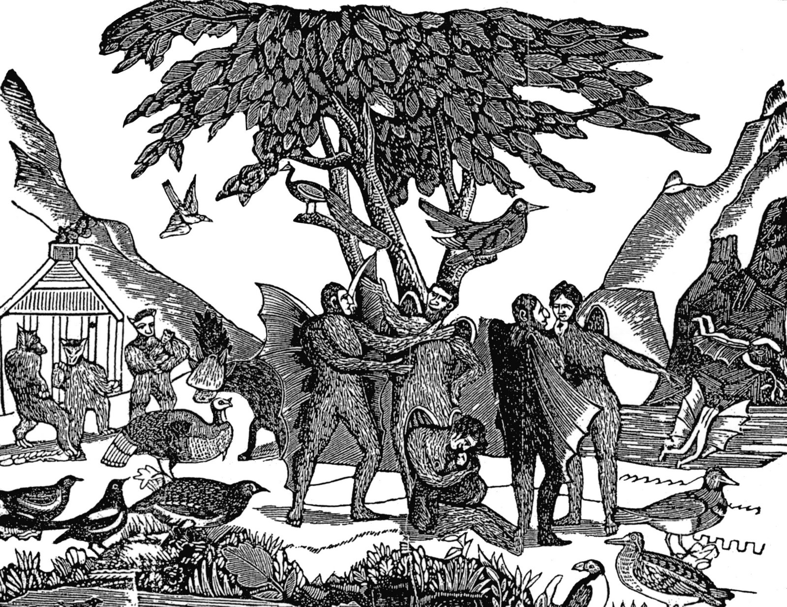

Saturday, November the 22nd, 2008
back to: title, date or indexes
I haven't read it (yet), but the title alone is enough to whet my appetite. The Sun and the Moon: The Remarkable True Account of Hoaxers, Showmen, Dueling Journalists, and Lunar Man-Bats in Nineteenth-Century New York by Matthew Goodman is reviewed here. If you act quickly you have a chance to win a signed copy by visiting the excellent Wonders And Marvels blog.
